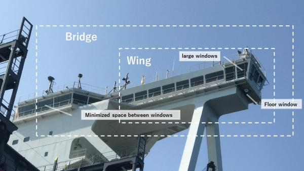

The ship’s bridge is the commanding station of a ship.
It controls the ship movement through its navigational equipment.
It controls important deck machinery, main engine and ship’s navigation system. Functions that are usually performed on the ship bridge are: controls the ship’s speed and direction (navigation), monitor weather and sea conditions, navigating and fixing the position of the ship, and facilitating internal as well as external communication.
